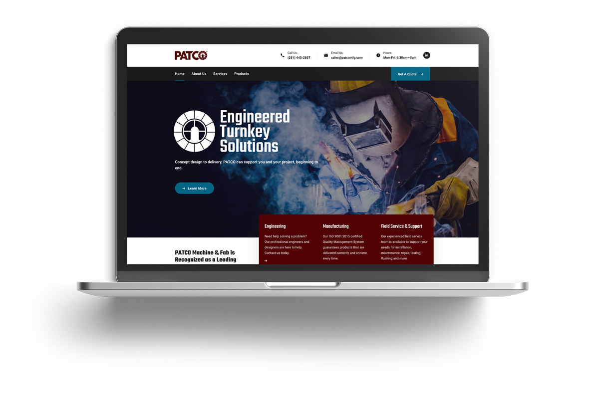
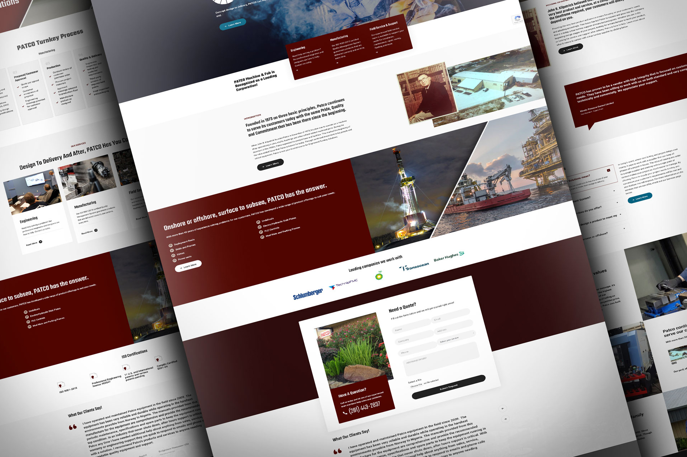
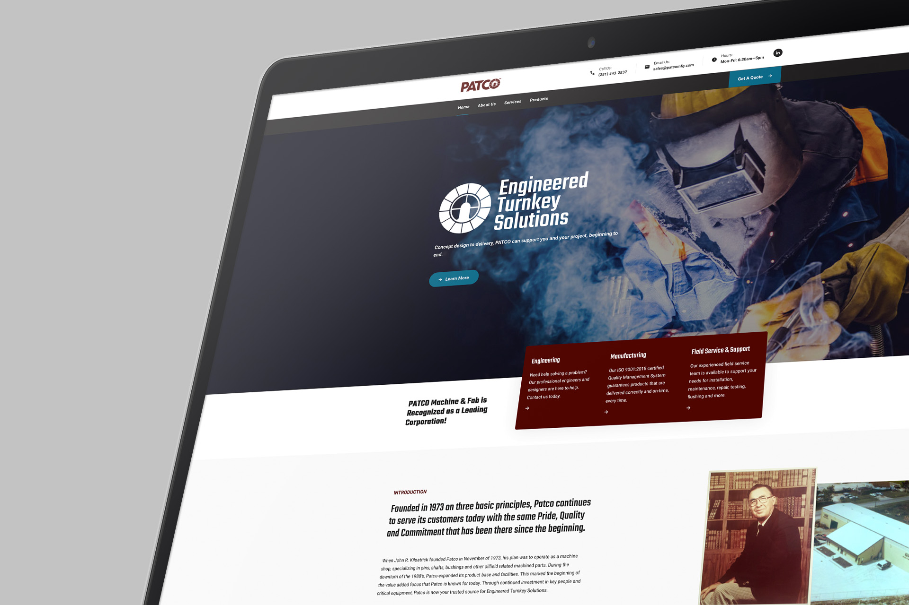
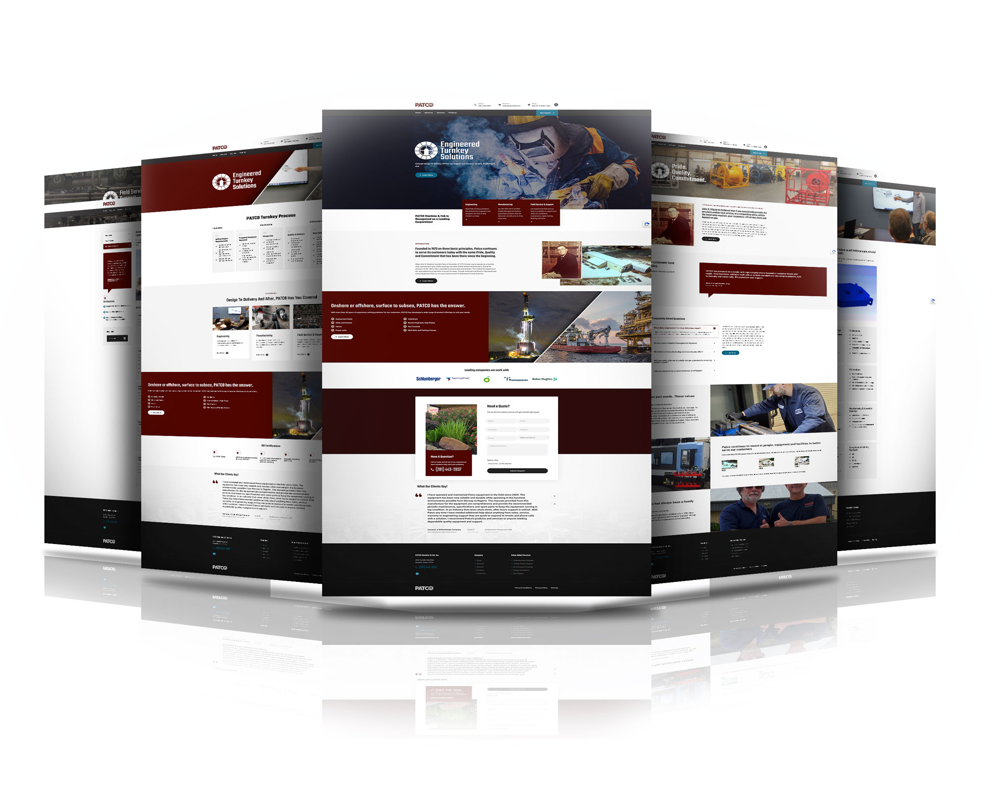

PATCO — Brand Modernization
Refreshing an industrial brand for clarity, trust, and digital reach.
Modernized PATCO's identity and digital experience to present a clearer value story for industrial buyers, aligning visuals and messaging across web and sales materials.
Built adaptable guidelines for photography, typography, and layouts so future campaigns and product updates stay consistent without heavy lift.
PROJECT
PATCO Brand Modernization
CLIENT
PATCO
EXPERTISE
Marketing and brand strategy



